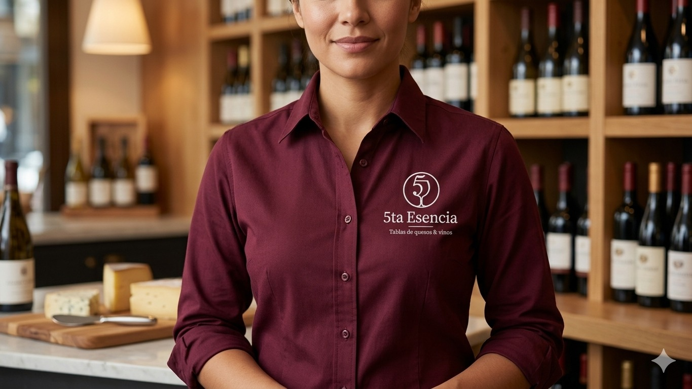
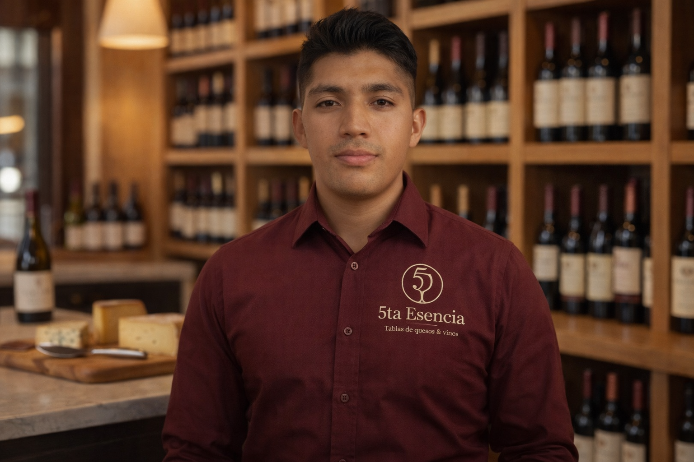
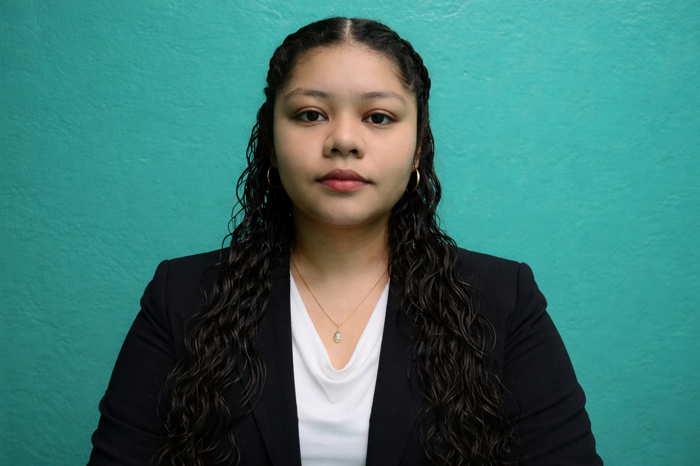

Nuestra Historia
En 5ta Esencia, creemos que emprender es, ante todo, un acto de valentía y una búsqueda de armonía. Este proyecto nace del deseo de transformar lo cotidiano en algo extraordinario, fusionando la precisión de la técnica con la calidez de lo artesanal.
Nuestra fundadora visualizó un espacio donde el diseño y el sabor no fueran conceptos separados, sino una experiencia unificada. Tras un camino de aprendizaje y evolución, 5ta Esencia surge como el resultado de una pasión innegociable por la excelencia.
No solo seleccionamos quesos, carnes frias o etiquetas de vino; realizamos una curaduría consciente para asegurar que cada elemento en nuestras tablas cuente una historia de calidad.
Nuestra Filosofía
Misión
Ofrecer una plataforma digital especializada en tablas de quesos gourmet que permita a los usuarios crear experiencias únicas y memorables, facilitando la selección y compra de productos personalizables para compartir momentos especiales con una interfaz sencilla, accesible y confiable.
Visión
Convertirse en una plataforma reconocida en el mercado digital de experiencias gastronómicas, destacando por ofrecer productos gourmet <<<<<<< Updated upstream de calidad que transformen pequeños gestos en momentos memorables, ======= de calidad que transformen pequenos gestos en momentos memorables, >>>>>>> Stashed changes mediante innovación tecnológica y un catálogo personalizado.
Nuestros Valores
Curaduría Consciente
Cada ingrediente elegido por su origen y capacidad de despertar los sentidos.
Minimalismo Gastronómico
La belleza reside en el orden y en dejar que el producto brille por si mismo.
Compromiso con el Detalle
Cuidamos lo que otros pasan por alto, desde una uva hasta el maridaje perfecto.
Personalización
Cada experiencia debe ser única, reflejando las emociones del cliente.

Vero
Puesto
Descripción breve de la persona.
Accesibilidad
Experiencias gastronómicas al alcance de todos los presupuestos.
Calidad e Innovación
Productos seleccionados que garantizan satisfacción mediante tecnología.
Nuestro Equipo
Las personas detras de La 5ta Esencia

Alejandro Gonzalez
Desarrollador
Investigación y documentación

======= >>>>>>> Stashed changes
>>>>>>> Stashed changes
Brenda Villar
Desarrolladora
Diseño y creatividad

Christian Escamilla
Desarrollador
Detallista y disciplinado

Vianey Lopez
Desarrolladora
Proactividad y organización

Angel Juarez
Desarrollador
Enfoque en resultados

Daniel Aguilar
Desarrollador
Proactivo y organizado

Fernando Aquino
Desarrollador
Atencion al detalle

Eduardo Villedas
Desarrollador
Adaptabilidad y resolución

Veronica Ortiz Castillos
=======
Veronica Ortiz
>>>>>>> Stashed changesDesarrolladora
Aprendizaje rápido y análisis
Victor Hernandez
Desarrollador
Redacción y documentación